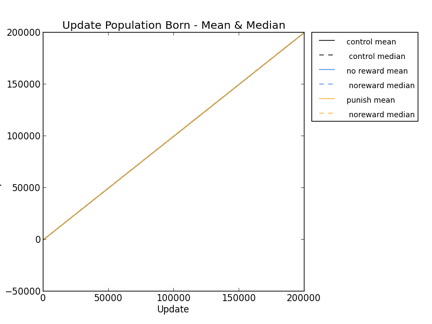

LAB MTG NOTES:
STATUS:
rosiec@atlantis:~/__research/devolab_research/evolution_of_modularity/raw_data/082/populations/control_intertwined_820001$ for i in *.spop.gz; do targetname=`echo $i | cut -d "." -f1`; echo $i $targetname; python ../../../../../scripts/common/extract_line_on_condition.py --output "still_alive__"$targetname.spop 5 ">0" $i; done rosiec@atlantis:~/__research/devolab_research/evolution_of_modularity/raw_data/082/populations/control_intertwined_820001$ echo "update,population_size,mean_update_born,median,var,std,ste" > c_i__population_born.csv; for i in {0..2000}; do output=`python ../../../../../scripts/common/extract_single_column_to_csv.py --separator " " -c 12 still_alive__detail-$i"00.spop"`; count=`cat still_alive__detail-$i"00.spop" | wc -l`; echo $i"00,"$count","$output; done >> c_i__population_born.csv rosiec@atlantis:~/__research/devolab_research/evolution_of_modularity/raw_data/082/populations/control_intertwined_820001$ python ../../../../../scripts/common/extract_single_column_to_csv.py --separator "," --header 3 *_i__population_born.csv > average_population_born.csv rosiec@atlantis:~/__research/devolab_research/evolution_of_modularity/raw_data/082/populations/control_intertwined_820001$ python ../../../../../scripts/common/extract_single_column_to_csv.py --separator "," --header 4 *_i__population_born.csv > median_population_born.csv
rosiec@George-Hammond:/Volumes/rosiec/__research/devolab_research/evolution_of_modularity/raw_data/082/populations$ python ../../../../scripts/graph_generation/plot_from_csv.py -o -a --xtick_multiplier 100 --title "Update Population Born - Mean & Median" --ylabel "Population Born" --xlabel "Update" --data_members 2 --legend "control mean, control median,no reward mean, noreward median,punish mean, noreward median" ~/Desktop/testing___averageborn.png control_intertwined_820001/average_population_born.csv control_intertwined_820001/median_population_born.csv noreward_intertwined_820001/average_population_born.csv noreward_intertwined_820001/median_population_born.csv punish_intertwined_820001/average_population_born.csv punish_intertwined_820001/median_population_born.csv
